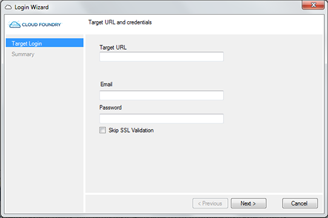

Windows, .NET, SQL Server, and IIS are either registered trademarks or trademarks of Microsoft Corporation in the United States and/or other countries.
A Buildpack is a collection of scripts that specify what frameworks and runtimes are to be deployed with an application.
When you build and deploy a Windows application, the following steps take place:
- You will be prompted for connection data (Endpoint, login, and password), and whether to ignore
SSL errors. You should check "Ignore SSL errors" in the dialog if your deployment
environment uses self-signed SSL certificates (such as HPE Helion Public Cloud).

- Application settings are collected from manifest.yml.
- If a local build is requested, projects in the solution directory are deployed to a temporary folder and compiled with MSBuild.
- Projects are deployed using the CloudFoundry MS Build Tasks.
After the project is deployed, the IIS Buildpack performs the following tasks:
- If there is no solution or project file present, the application is simply copied to the "Build Path" directory (This is a directory determined internally by the Buildpack).
- If a project file is present, but no solution file, the application is built with MSBuild with no parameters, and the built application is copied to the "Build Path" directory.
- If a solution file is present, NuGet packages listed in the solution file will be restored, and the application will be built with MSBuild, and the application is copied to the "Build Path" directory.
This process can fail if any of the following are true:
- There is more than one solution file present
- The number of folders in the deployed site is not correct
- There is no Web.Config file in the root of the "Build Path" directory after deployment
For more information, please refer to the Buildpack git project.